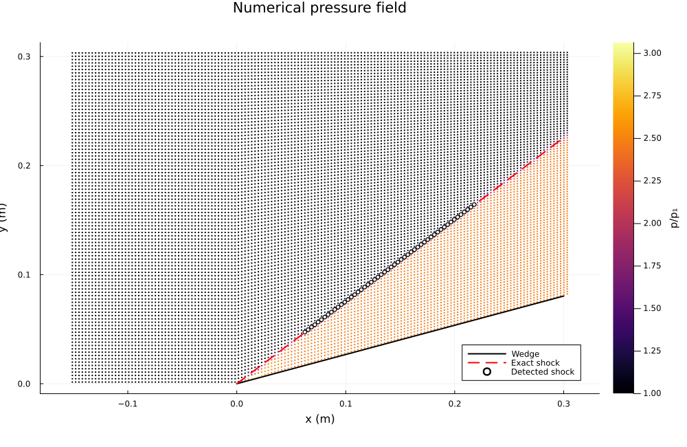
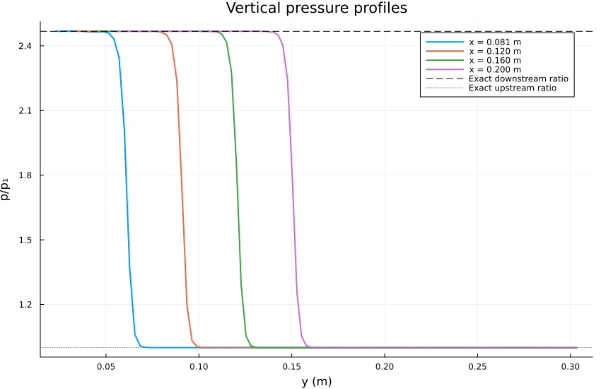
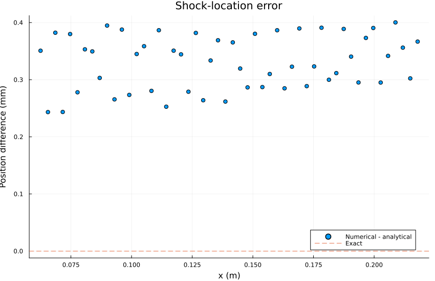
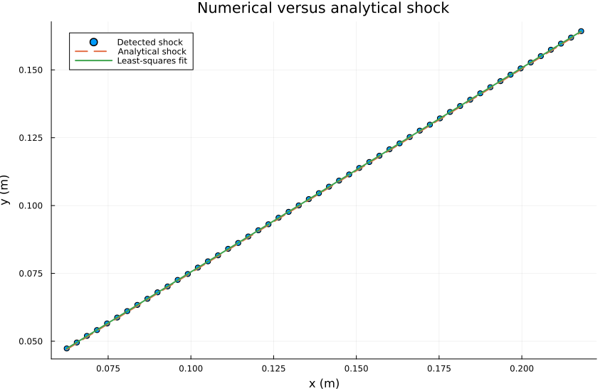

The objective of this verification case is to evaluate the accuracy
of OpenFOAM's rhoCentralFoam solver by comparing its numerical
solution against the analytical oblique-shock relations for
supersonic flow over a 15-degree wedge.
The benchmark is based on NASA Glenn Research Center's
supersonic wedge verification problem.
The freestream Mach number is
and the wedge deflection angle is
The quantities of interest are:
This is primarily a verification problem, rather than
an experimental validation problem, because an analytical
solution exists for the inviscid oblique shock.
The numerical solution is compared against the exact
Rankine–Hugoniot relations and NASA's published reference
values.
Consider a uniform supersonic flow approaching a sharp
two-dimensional wedge.
The freestream velocity is aligned with the positive
-direction.
The wedge surface deflects the flow upward by an angle
.
For the specified Mach number and wedge angle, an attached
oblique shock forms at the wedge leading edge.
Two approximately uniform flow regions are produced:
| Parameter | Symbol | Value | Units |
|---|---|---|---|
| Freestream Mach number | 2.5 | - | |
| Wedge deflection angle | 15 | degrees | |
| Static pressure | 101352.9 | Pa | |
| Static temperature | 288.8889 | K | |
| Specific heat at constant pressure | 1004.5 | J/(kg K) | |
| Molecular weight | 28.970 | kg/kmol | |
| Ratio of specific heats | approximately 1.4 | - |
The thermodynamic constants are consistent with the
OpenFOAM thermophysicalProperties dictionary.
The specific gas constant is
The specific heat at constant volume is
Therefore,
For numerical verification, the exact value calculated
from the input properties should be used rather than
independently rounding to 1.4.
The computational geometry follows the NASA benchmark.
| Parameter | Value |
|---|---|
| Inlet position | m |
| Wedge leading edge | m |
| Outlet position | m |
| Upper boundary | m |
| Wedge angle | 15 degrees |
| Spanwise thickness | 0.001 m |
The wedge surface is defined by
for .
The analytical shock location is
where is the oblique shock angle.
The domain is discretized using two structured
hexahedral blocks generated by blockMesh.
| Block | Cells | |||
|---|---|---|---|---|
| Upstream | 50 | 100 | 1 | 5000 |
| Wedge region | 100 | 100 | 1 | 10000 |
| Total | - | - | - | 15000 |
The mesh is one cell thick in the spanwise direction.
The front and back boundaries use the OpenFOAM empty
boundary condition, resulting in an effectively
two-dimensional calculation.
The governing equations are the compressible Euler
equations in two spatial dimensions.
The conservative state vector is
The conservative equations are
The inviscid flux vectors are
and
The specific total energy is
For a calorically perfect gas,
and
The local speed of sound is
The Mach number is
These relations close the system of conservation equations.
Unlike the normal-shock problem in Phase 1, the
incoming velocity is not perpendicular to the shock.
The velocity can be decomposed into normal and
tangential components relative to the shock.
Upstream,
and
The upstream normal Mach number is
Across an inviscid oblique shock, the tangential
velocity is unchanged:
Mass conservation gives
The normal velocity decreases because the density
increases across the compressive shock.
The oblique shock angle satisfies
For the present problem,
and
Equation (1) is solved numerically for .
The weak attached-shock solution is selected.
NASA's published analytical result is
Using the upstream normal Mach number,
the normal-shock pressure relation gives
The NASA reference value is
The normal-shock density relation gives
The analytical result is
From the ideal-gas equation,
Therefore,
The analytical result is
The downstream normal Mach number satisfies
The downstream Mach number is obtained from
The analytical result is
| Quantity | Analytical Value |
|---|---|
| Shock angle | 36.94490 degrees |
| Downstream Mach number | 1.873526 |
| Pressure ratio | 2.467500 |
| Density ratio | 1.866549 |
| Temperature ratio | 1.321958 |
These values are the analytical references used
throughout the verification.
The simulation uses OpenFOAM v2606 with
the rhoCentralFoam solver.
The solver uses a density-based central-upwind
formulation for compressible flow.
Integrating the conservation equations over a
computational cell gives
Here,
The numerical flux approximates the transport of
conserved quantities between neighboring cells.
| Component | Configuration |
|---|---|
| Solver | rhoCentralFoam |
| Convective flux | Kurganov |
| Temporal scheme | Euler |
| Gradient scheme | Gauss linear |
| Density reconstruction | Minmod |
| Velocity reconstruction | MinmodV |
| Temperature reconstruction | Minmod |
| Maximum Courant number | 0.2 |
| Initial time step | s |
| Maximum time step | s |
The Minmod limiter was used to reduce the potential
for nonphysical oscillations near the shock.
This introduces numerical dissipation and produces
a shock transition distributed across several cells.
The resulting numerical shock thickness is not
the physical molecular thickness of the shock.
The numerical solution is analyzed independently
using Julia.
The verification program reads the OpenFOAM
cell-centered fields:
CxCypTUDensity and Mach number are reconstructed
from the extracted primitive variables.
The original detector identified the location
of the maximum pressure gradient along
each streamwise sampling column.
That method produced an isolated erroneous
detection near m.
The detector was subsequently corrected using
pressure-midpoint interpolation.
The pressure midpoint is defined as
At each streamwise station, two neighboring
cells are identified such that
and
The numerical shock position is obtained by
linear interpolation:
This method locates a consistent position
inside the captured pressure transition.
Unlike the original gradient-peak detector,
it does not automatically select the largest
local pressure derivative.
The detected shock positions are fitted to
The coefficients are calculated by solving
The numerical shock angle is
The shock-angle error is
The fitted intercept provides an additional
measure of geometric agreement.
For the ideal attached shock originating at
, the analytical intercept is zero.

Figure 1. Numerical pressure field normalized by
freestream pressure, with the analytical shock and
numerically detected shock positions.
The numerical solution exhibits the expected
attached oblique-shock structure.
The shock originates near the wedge leading edge
and extends upward through the computational domain.
The region between the shock and wedge surface
has elevated pressure.
The freestream region above the shock remains
close to the upstream pressure.
The compressed region follows the expected
wedge geometry.
The pressure field shows qualitatively good
agreement with the analytical solution.

Figure 2. Normalized pressure profiles at
four streamwise sampling locations.
The sampling positions are approximately
The analytical upstream pressure ratio is
The analytical downstream pressure ratio is
The numerical pressure profiles transition
between these two expected states.
The profiles exhibit smooth captured shocks
with no visually significant pressure overshoot
or undershoot at the displayed scale.
As the streamwise position increases,
the pressure transition moves upward,
consistent with the analytical shock angle.
The profiles also demonstrate that the
numerical shock has finite thickness.
This finite thickness results from
the shock-capturing discretization.

Figure 3. Shock-location residuals relative
to the analytical shock position.
The shock-location error is defined as
The original gradient-based detector produced
one isolated outlier near
The outlier had a displacement of approximately
This was identified as a shock-detection issue,
rather than evidence of a displaced physical shock.
The corrected midpoint-based detector was
subsequently executed.
The corrected analysis should be used for
final quantitative error reporting.

Figure 4. Detected shock positions compared
with the analytical shock line and fitted
numerical shock line.
The numerical detections follow the expected
approximately linear shock geometry.
The analytical shock satisfies
The fitted numerical shock satisfies
The numerical angle is calculated using
The corrected midpoint-based detection
provides the preferred estimate for
quantitative shock-angle verification.
The analytical reference values are compared
with the quantities calculated from the
OpenFOAM solution.
Starting oblique-shock verification...
Reading: /home/jfowler/Code/Projects/hypersonicOpenFOAMVerificationCases/mach2p5Wedge/0.00200000
===========================================================================
NASA OBLIQUE SHOCK VERIFICATION
===========================================================================
Total cells: 15000
Specific gas constant: 287.00250666 J/(kg K)
Heat capacity ratio: 1.4000048911
SHOCK GEOMETRY
---------------------------------------------------------------------------
Analytical angle: 36.94493873 degrees
Numerical angle: 36.95135141 degrees
Angle error: 0.00641269 degrees
Fitted intercept: 3.06387177e-04 m
Shock fit RMS: 4.57036887e-05 m
POST-SHOCK STATE
---------------------------------------------------------------------------
Quantity OpenFOAM Analytical Error
p 250144.8764827 250088.9860304 0.02235 %
rho 2.2807821 2.2817009 0.04027 %
T 382.1399348 381.9004461 0.06271 %
u 708.4776633 708.9006731 0.05967 %
M 1.8718200 1.8735225 0.09087 %
JUMP RATIOS
---------------------------------------------------------------------------
p2/p1 2.4680584 2.4675070 0.02235 %
rho2/rho1 1.8657960 1.8665476 0.04027 %
T2/T1 1.3227920 1.3219630 0.06271 %
SAMPLE COUNTS
---------------------------------------------------------------------------
Upstream cells: 2686
Downstream cells: 420
Verification complete.
Results saved to: /home/jfowler/Code/Projects/hypersonicOpenFOAMVerificationCases/mach2p5Wedge/analysis/results
The relative error for a nonzero reference value is
For the shock angle, an additional absolute
error in degrees is reported:
The corrected Julia analysis has been executed,
but its numerical console output is not included
in this report draft. The table should be populated
using those measured results rather than estimates
from the plotted curves.
An ideal inviscid shock is a mathematical
discontinuity.
The finite-volume solution distributes this
discontinuity across a finite region.
Define pressure levels corresponding to
10% and 90% of the analytical pressure jump:
and
The measured shock thickness along a
sampling direction is
For comparison with a shock-normal thickness,
a vertical measurement must be projected
onto the shock-normal direction:
This relationship assumes that the shock
is locally straight and aligned with the
analytical shock angle.
The thickness may also be normalized by
the representative shock-normal mesh spacing.
The finite shock thickness is generated
by numerical dissipation.
The Minmod limiter reduces reconstructed
slopes near discontinuities, increasing
robustness but potentially spreading the shock.
The numerical method must balance:
A narrower shock is not automatically
a more accurate shock.
Pressure overshoot is defined as
Pressure undershoot is
These metrics should be evaluated within
appropriately selected regions surrounding
the shock.
The current pressure profiles show no
visually significant oscillations.
Precise overshoot and undershoot values
should be calculated from the numerical data.
The numerical solution represents a shock
over multiple finite-volume cells.
Spatial discretization influences:
The solver uses Euler time integration.
The numerical solution may therefore
contain time-discretization error.
A sufficiently small Courant number
improves numerical stability but does
not independently establish temporal
convergence.
The structured downstream mesh follows
the inclined wedge surface.
Cell nonorthogonality and skewness
can influence reconstruction and
face-flux evaluation.
The shock is not explicitly aligned with
the baseline mesh.
Shock location is not directly stored
as an OpenFOAM solution variable.
It is reconstructed from the pressure field.
The initial gradient-based method
demonstrated sensitivity to isolated
local gradient peaks.
Pressure-midpoint interpolation provides
a more consistent measurement method
for the current benchmark.
The OpenFOAM case defines and
molecular weight.
The analytical calculation derives
and from those properties.
Small differences from a reference solution
using exactly must be separated
from numerical discretization error.
The current baseline mesh contains
15,000 finite-volume cells.
A systematic refinement sequence
is proposed:
| Mesh | Upstream | Downstream | Total Cells | |
|---|---|---|---|---|
| Coarse | 50 | 100 | 100 | 15000 |
| Medium | 100 | 200 | 200 | 60000 |
| Fine | 200 | 400 | 400 | 240000 |
The physical geometry and numerical methods
will remain unchanged between refinements.
For a representative error metric ,
This formula assumes that the errors are
nonzero and exhibit meaningful convergence
under the refinement sequence.
Because the solution contains a discontinuity,
the observed global convergence order may
be lower than the nominal order of the
smooth-region reconstruction method.
Shock-angle accuracy, plateau-state accuracy,
and global field error may converge at
different rates.
After establishing baseline grid convergence,
the analytical shock angle will be used
to define a local refinement region.
The ideal shock line is
The perpendicular distance from a point
to the shock line is
This distance can define a refinement
band surrounding the predicted shock.
Uniform and shock-aligned refinement
will be compared to distinguish the
benefits of additional resolution from
mesh-alignment effects.
Plots.jlblockMesh
checkMesh -allGeometry -allTopology
rhoCentralFoam
postProcess -func writeCellCentres -latestTime
julia analysis/verify_oblique_shock.jl
julia analysis/plots.jl
analysis/
├── README.md
├── verify_oblique_shock.jl
├── plots.jl
└── results/
├── flowfield.csv
├── shock_location.csv
├── shock_angle.csv
├── pressure_field.png
├── pressure_profiles.png
├── shock_error.png
└── shock_fit.png
The OpenFOAM solution reproduces the expected
attached oblique-shock structure for Mach 2.5
flow over a 15-degree wedge.
The primary findings are:
An attached oblique shock forms near the
wedge leading edge.
The numerical shock follows the predicted
analytical shock line.
The downstream pressure plateau closely
matches the theoretical pressure ratio
of 2.467500.
Vertical pressure profiles exhibit smooth
transitions between the analytical
upstream and downstream states.
The original gradient-based shock detector
produced an isolated erroneous detection.
The shock detector was corrected using
pressure-midpoint interpolation, and the
corrected analysis was executed.
The corrected numerical metrics must be
inserted from the Julia output to complete
the quantitative verification record.
The present results support the qualitative
correctness of the numerical flow solution.
A complete assessment of numerical accuracy
requires the corrected error metrics,
conservation analysis, and systematic
grid-convergence study.
The next phase will investigate the influence
of mesh resolution and alignment on
shock-capturing accuracy.
NASA Glenn Research Center,
"Supersonic Wedge Verification Case,"
NPARC Alliance Verification and Validation Archive.
https://www.grc.nasa.gov/www/wind/valid/wedge/wedge.html
OpenCFD Ltd.,
OpenFOAM v2606 Documentation.
https://doc.openfoam.com/2606/
Anderson, J. D.,
Modern Compressible Flow: With Historical Perspective,
3rd edition, McGraw-Hill, 2003.
Toro, E. F.,
Riemann Solvers and Numerical Methods for Fluid Dynamics,
3rd edition, Springer, 2009.
LeVeque, R. J.,
Finite Volume Methods for Hyperbolic Problems,
Cambridge University Press, 2002.
Kurganov, A., and Tadmor, E.,
"New High-Resolution Central Schemes for Nonlinear
Conservation Laws and Convection–Diffusion Equations,"
Journal of Computational Physics,
Vol. 160, No. 1, pp. 241–282, 2000.